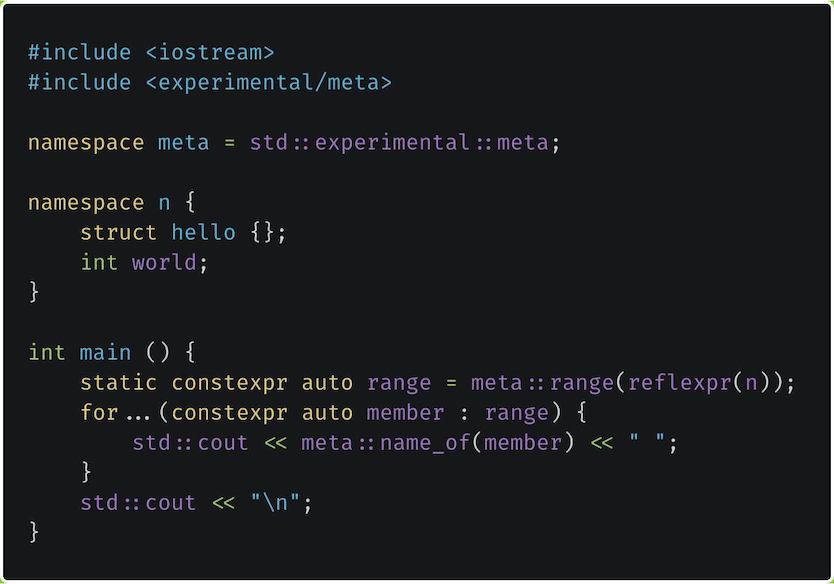
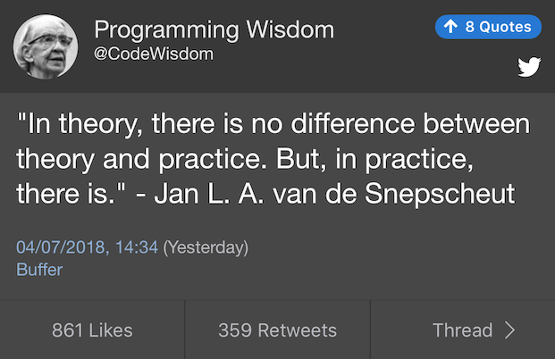

2019-06-20

https://www.bfilipek.com/2019/05/heterogeneous-lookup-cpp14.html
https://www.reddit.com/r/cpp/comments/btrfnd/heterogeneous_lookup_in_ordered_containers_c14/
Part 1: https://awfulcode.io/2019/04/13/professional-zero-cost-setup-for-c-projects-part-1-of-n/
Part 2: https://awfulcode.io/2019/04/26/professional-zero-cost-setup-for-c-projects-part-2-of-n/
Reddit: https://www.reddit.com/r/cpp/comments/bhqcjh/professional_zerocost_setup_for_c_projects_part_2/
Meeting C++ 2018: Björn Fahller - Higher Order Functions for ordinary developers
A higher-order function is a function that takes other functions as arguments or returns a function as result.
Take-away messages:
std::function as return type, use auto insteadstd::optional and std::expected remove the need for many conditionalshttps://github.com/rollbear/lift
Boost.HOF in Boost 1.68+ (Docs)
struct Callable {
void operator()(){count++;}
void operator()() const = delete;
int count = 0;
};
void f() {
Callable counter;
std::function<void(void)> f = counter;
f();
const auto cf = f;
cf(); // ???
}void f() {
std::unique_ptr<int> up;
auto l=[up=std::move(up)](){};
std::function<void(void)> f=l; // Build fails
}namespace libs {
inline bool contains(std::string_view needle, std::string_view haystack) {
assert(needle.size() <= haystack.size()); // !!!
return haystack.find(needle) != std::string_view::npos;
}
}https://www.jetbrains.com/lp/devecosystem-2019/cpp/
https://www.reddit.com/r/cpp/comments/c21ft6/the_state_of_developer_ecosystem_2019_c/
https://github.com/catchorg/Catch2/releases/tag/v2.9.0
This release replaces the old benchmarking support with a new one, based on donated Nonius code.
Cpp-Taskflow is by far faster, more expressive, and easier for drop-in integration than existing parallel task programming libraries such as OpenMP Tasking and Intel TBB FlowGraph in handling complex parallel workloads.
https://github.com/cpp-taskflow/cpp-taskflow/releases/tag/v2.2.0 (MIT)
Docs: https://cpp-taskflow.github.io/cpp-taskflow/index.html
https://eli.thegreenplace.net/2014/sfinae-and-enable_if/
https://www.reddit.com/r/cpp/comments/c1njko/sfinae_and_enable_if_eli_benderskys_website/
https://thephd.github.io/vendor/future_cxx/papers/d1132.html
https://github.com/ThePhD/out_ptr
https://github.com/ThePhD/out_ptr/blob/master/docs/out_ptr.adoc
https://lists.boost.org/Archives/boost//2019/06/246353.php
